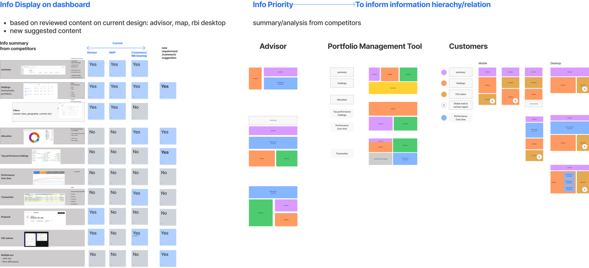
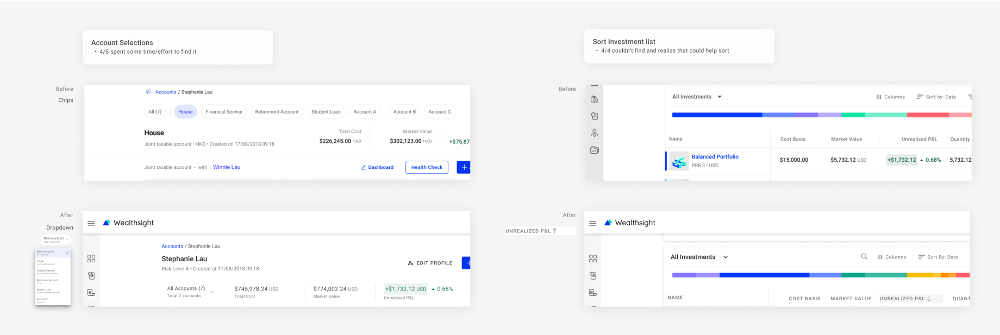
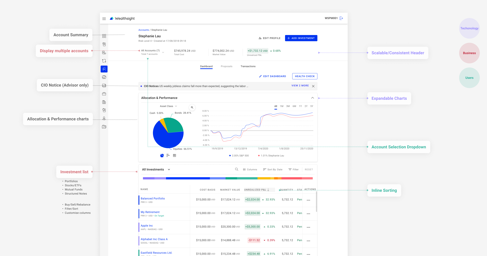

// 1 months | Product Design Design
// 3 Designer + 1 PM + 3 Front-End Engineers
Portfolio managers, financial advisors and individual investors use the user account dashboard to review their investment performance, portfolio allocation and add/manage portfolios.
// Incorprate multi-faced requirements from clients, business value, user experience and technical strategy perspectives.
// Define a shared design pattern that fit into three different journeys: portfolio management tool, financial advisor and customers.
// It is challenging for three designers to agree on one design pattern. Because enterprise users and customers can have totally different goals and focus, this could lead to opposite designs. E.g. to show or hide certain features depends on the frequency of use.
due to timeline to shift the feature to clients, also, some of them are concepts for marketing pitch, which means we have no existing users ask for it, we have limited knowlege and resources to understand users' needs and mental model
With the design team, I lauched desktop research and workshop to extract the common modules that all customer, advisor tool and management tools have. Based on the result, we’re able to define what structure and modules to have in the first fold of the screen, and documented the differences between customer and investment professional tools.

To make sure there’s no basic usability problems within short period of time, I ran cognitive walkthrough with 5 collegues to find out how easy it is for user to complete the pre-defined tasks with the concept design.
Create concept design and prototypes to validate our ideas.
Unable to define use scenarios without thoroughly analysis of first-hand data at early stage --> what information to include?
--> Desktop research
Introduced new design patterns, might be hard to anticipate most technical issues that may need design update
--> Be open to design iterations
Not able to solidly validate design with real target users
--> cognitive walkthrough